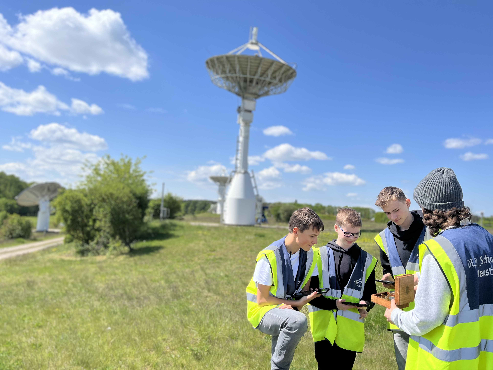

Countdown bis zum Raketenstart
Wird geladen...
🚀
Willkommen bei unserem CanSat-Projekt
Wir sind ein Schülerteam, das im Rahmen des Deutschen CanSat-Wettbewerbs 2024/25 einen Minisatelliten baut und startet.
Worum geht es?
Ein CanSat ist ein Miniatursatellit in der Größe einer Getränkedose. Unsere Mission: Messdaten sammeln, mit Funk übertragen und eigene Experimente durchführen – mit echter Raumfahrttechnik im Kleinformat.